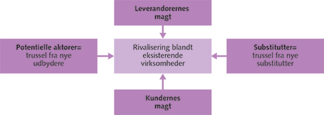

Meso niveau (branche)

Rivalisering blandt de eksisterende virksomheder på markedet:
- Væksten I markedet
- Antallet og størrelsen af konkurrenter
- Graden af produkternes differentiering
- Den kapacitet, der er til rådighed I branchen.
Leverandøreres magt:
- Leverandørenes forhandlingsstyre
- Produktets betydning for virksomheden
- Substitutionsmuligheder blandt leverandører
- Kapacitetsbegrænsninger hos leverandøren
- Råvaremangel
- Mangel på kapital og/eller specialuddannet personale
- Differentiering
Potentielle aktører (trusler fra nye udbydere):
Kundernes magt:
Subsitutter (trusler fra nye substitutter):
Substituerende produkter
- Produkter der erstatter et andet produkt eks. Iphone 10 istedet for s9
Hård konkurrence hvis:
- Substitutionsmuligheder er nærliggende
- Substitionsmulighederne er let tilgængelige
- Kundernes loyalitet er begrænset
- Lave skifteomkostninger for kunderne
Komplementære (udvidelse af de 5 forces):
Komplementære produkter
- Produkter der understøtter et andet. Eks. Simkort er komplementerende til mobiler.